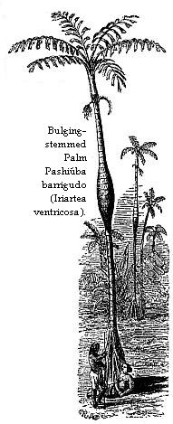
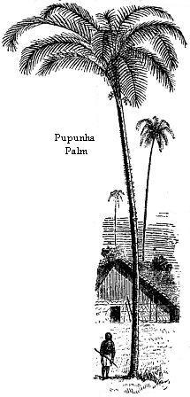

Departure from Barra — First Day and Night on the Upper Amazons — Desolate Appearance of River in the Flood Season — Cucáma Indians — Mental Condition of Indians — Squalls — Manatee — Forest — Floating Pumice Stones from the Andes — Falling Banks — Ega and its Inhabitants — Daily Life of a Naturalist at Ega — The Four Seasons of the Upper Amazons.
I must now take the reader from the picturesque, hilly country of the Tapajos, and its dark, streamless waters, to the boundless wooded plains, and yellow turbid current of the Upper Amazons or Solimoens. I will resume the narrative of my first voyage up the river, which was interrupted at the Barra of the Rio Negro in the seventh chapter, to make way for the description of Santarem and its neighbourhood.
I embarked at Barra on the 26th of March, 1850, three years before steamers were introduced on the upper river, in a cuberta which was returning to Ega, the first and only town of any importance in the vast solitudes of the Solimoens, from Santarem, whither it had been sent, with a cargo of turtle oil in earthenware jars. The owner, an old white-haired Portuguese trader of Ega named Daniel Cardozo, was then at Barra attending the assizes as juryman, a public duty performed without remuneration, which took him six weeks away from his business. He was about to leave Barra himself, in a small boat, and recommended me to send forward my heavy baggage in the cuberta and make the journey with him. He would reach Ega, 370 miles distant from Barra, in twelve or fourteen days; whilst the large vessel would be thirty or forty days on the road. I preferred, however, to go in company with my luggage, looking forward to the many opportunities I should have of landing and making collections on the banks of the river.
I shipped the collections made between Pará and the Rio Negro in a large cutter which was about descending to the capital, and after a heavy day’s work got all my chests aboard the Ega canoe by eight o’clock at night. The Indians were then all embarked, one of them being brought dead drunk by his companions, and laid to sober himself all night on the wet boards of the tombadilha. The cabo, a spirited young white, named Estulano Alves Carneiro, who has since risen to be a distinguished citizen of the new province of the Upper Amazons, soon after gave orders to get up the anchor. The men took to the oars, and in a few hours we crossed the broad mouth of the Rio Negro; the night being clear, calm, and starlit, and the surface of the inky waters smooth as a lake.
When I awoke the next morning, we were progressing by espia along the left bank of the Solimoens. The rainy season had now set in over the region through which the great river flows; the sand-banks and all the lower lands were already under water, and the tearing current, two or three miles in breadth, bore along a continuous line of uprooted trees and islets of floating plants. The prospect was most melancholy; no sound was heard but the dull murmur of the waters; the coast along which we travelled all day was encumbered every step of the way with fallen trees, some of which quivered in the currents which set around projecting points of land. Our old pest, the Motúca, began to torment us as soon as the sun gained power in the morning. White egrets were plentiful at the edge of the water, and humming-birds, in some places, were whirring about the flowers overhead. The desolate appearance of the landscape increased after sunset, when the moon rose in mist.
This upper river, the Alto-Amazonas, or Solimoens, is always spoken of by the Brazilians as a distinct stream. This is partly owing, as before remarked, to the direction it seems to take at the fork of the Rio Negro; the inhabitants of the country, from their partial knowledge, not being able to comprehend the whole river system in one view. It has, however, many peculiarities to distinguish it from the lower course of the river. The trade-wind, or sea-breeze, which reaches, in the height of the dry season, as far as the mouth of the Rio Negro, 900 or 1000 miles from the Atlantic, never blows on the upper river. The atmosphere is therefore more stagnant and sultry, and the winds that do prevail are of irregular direction and short duration. A great part of the land on the borders of the Lower Amazons is hilly; there are extensive campos, or open plains, and long stretches of sandy soil clothed with thinner forests. The climate, in consequence, is comparatively dry many months in succession during the fine season passing without rain. All this is changed on the Solimoens. A fortnight of clear sunny weather is a rarity: the whole region through which the river and its affluents flow, after leaving the easternmost ridges of the Andes, which Pöppig describes as rising like a wall from the level country, 240 miles from the Pacific, is a vast plain, about 1000 miles in length, and 500 or 600 in breadth, covered with one uniform, lofty, impervious, and humid forest. The soil is nowhere sandy, but always either a stiff clay, alluvium, or vegetable mold, which the latter, in many places, is seen in water-worn sections of the river banks to be twenty or thirty feet in depth. With such a soil and climate, the luxuriance of vegetation, and the abundance and beauty of animal forms which are already so great in the region nearer the Atlantic, increase on the upper river. The fruits, both wild and cultivated, common to the two sections of the country, reach a progressively larger size in advancing westward, and some trees, which blossom only once a year at Pará and Santarem, yield flower and fruit all the year round at Ega. The climate is healthy, although one lives here as in a permanent vapour bath. I must not, however, give here a lengthy description of the region whilst we are yet on its threshold. I resided and travelled on the Solimoens altogether for four years and a half. The country on its borders is a magnificent wilderness where civilised man, as yet, has scarcely obtained a footing; the cultivated ground from the Rio Negro to the Andes amounting only to a few score acres. Man, indeed, in any condition, from his small numbers, makes but an insignificant figure in these vast solitudes. It may be mentioned that the Solimoens is 2130 miles in length, if we reckon from the source of what is usually considered the main stream (Lake Lauricocha, near Lima); but 2500 miles by the route of the Ucayali, the most considerable and practicable fork of the upper part of the river. It is navigable at all seasons by large steamers for upwards of 1400 miles from the mouth of the Rio Negro.
On the 28th we passed the mouth of Ariauü, a narrow inlet which communicates with the Rio Negro, emerging in front of Barra. Our vessel was nearly drawn into this by the violent current which set from the Solimoens. The towing-cable was lashed to a strong tree about thirty yards ahead, and it took the whole strength of crew and passengers to pull across. We passed the Guariba, a second channel connecting the two rivers, on the 30th, and on the 31st sailed past a straggling settlement called Manacápurú, situated on a high, rocky bank. Many citizens of Barra have sitios, or country-houses, in this place, although it is eighty miles distant from the town by the nearest road. Beyond Manacápurú all traces of high land cease; both shores of the river, henceforward for many hundred miles, are flat, except in places where the Tabatinga formation appears in clayey elevations of from twenty to forty feet above the line of highest water. The country is so completely destitute of rocky or gravelly beds that not a pebble is seen during many weeks’ journey. Our voyage was now very monotonous. After leaving the last house at Manacápurú, we travelled nineteen days without seeing a human habitation, the few settlers being located on the banks of inlets or lakes some distance from the shores of the main river. We met only one vessel during the whole of the time, and this did not come within hail, as it was drifting down in the middle of the current in a broad part of the river, two miles from the bank along which we were laboriously warping our course upwards.
After the first two or three days we fell into a regular way of life on board. Our crew was composed of ten Indians of the Cucáma nation, whose native country is a portion of the borders of the upper river in the neighbourhood of Nauta, in Peru. The Cucámas speak the Tupí language, using, however, a harsher accent than is common amongst the semi-civilised Indians from Ega downwards. They are a shrewd, hard-working people, and are the only Indians who willingly, and in a body, engage themselves to navigate the canoes of traders. The pilot, a steady and faithful fellow named Vicente, told me that he and his companions had now been fifteen months absent from their wives and families, and that on arriving at Ega they intended to take the first chance of a passage to Nauta. There was nothing in the appearance of these men to distinguish them from canoemen in general. Some were tall and well built, others had squat figures with broad shoulders and excessively thick arms and legs. No two of them were at all similar in the shape of the head: Vicente had an oval visage, with fine regular features, whilst a little dumpy fellow, the wag of the party, was quite a Mongolian in breadth and prominence of cheek, spread of nostrils, and obliquity of eyes; but these two formed the extremes as to face and figure. None of them were tattooed or disfigured in any way and they were all quite destitute of beard. The Cucámas are notorious on the river for their provident habits. The desire of acquiring property is so rare a trait in Indians, that the habits of these people are remarked on with surprise by the Brazilians. The first possession which they strive to acquire on descending the river into Brazil, which all the Peruvian Indians look upon as a richer country than their own, is a wooden trunk with lock and key; in this they stow away carefully all their earnings converted into clothing, hatchets, knives, harpoon heads, needles and thread, and so forth. Their wages are only fourpence or sixpence a day, which is often paid in goods charged one hundred per cent above Pará prices, so that it takes them a long time to fill their chest.
It would be difficult to find a better-behaved set of men in a voyage than these poor Indians. During our thirty-five days’ journey they lived and worked together in the most perfect good fellowship. I never heard an angry word pass amongst them. Senhor Estulano let them navigate the vessel in their own way, exerting his authority only now and then when they were inclined to be lazy. Vicente regulated the working hours. These depended on the darkness of the nights. In the first and second quarters of the moon they kept it up with espia, or oars, until almost midnight; in the third and fourth quarters they were allowed to go to sleep soon after sunset, and were aroused at three or four o’clock in the morning to resume their work. On cool, rainy days we all bore a hand at the espia, trotting with bare feet on the sloppy deck in Indian file to the tune of some wild boatman’s chorus. We had a favorable wind for only two days out of the thirty-five, by which we made about forty miles, the rest of our long journey was accomplished literally by pulling our way from tree to tree. When we encountered a remanso near the shore, we got along very pleasantly for a few miles by rowing: but this was a rare occurrence. During leisure hours the Indians employed themselves in sewing. Vicente was a good hand at cutting out shirts and trousers, and acted as master tailor to the whole party, each of whom had a thick steel thimble and a stock of needles and thread of his own. Vicente made for me a set of blue-check cotton shirts during the passage.
The goodness of these Indians, like that of most others amongst whom I lived, consisted perhaps more in the absence of active bad qualities, than in the possession of good ones; in other words, it was negative rather than positive. Their phlegmatic, apathetic temperament, coldness of desire and deadness of feeling, want of curiosity and slowness of intellect, make the Amazonian Indians very uninteresting companions anywhere. Their imagination is of a dull, gloomy, quality and they seemed never to be stirred by the emotions:—love, pity, admiration, fear, wonder, joy, or enthusiasm. These are characteristics of the whole race. The good fellowship of our Cucámas seemed to arise not from warm sympathy, but simply from the absence of eager selfishness in small matters. On the morning when the favourable wind sprung up, one of the crew, a lad of about seventeen years of age, was absent ashore at the time of starting, having gone alone in one of the montarias to gather wild fruit. The sails were spread and we travelled for several hours at great speed, leaving the poor fellow to paddle after us against the strong current. Vicente, who might have waited a few minutes at starting, and the others, only laughed when the hardship of their companion was alluded to. He overtook us at night, having worked his way with frightful labor the whole day without a morsel of food. He grinned when he came on board, and not a dozen words were said on either side.
Their want of curiosity is extreme. One day we had an unusually sharp thunder shower. The crew were lying about the deck, and after each explosion all set up a loud laugh; the wag of the party exclaiming: “There’s my old uncle hunting again!” an expression showing the utter emptiness of mind of the spokesman. I asked Vicente what he thought was the cause of lightning and thunder? He said, “Timaá ichoquá,”—I don’t know. He had never given the subject a moment’s thought! It was the same with other things. I asked him who made the sun, the stars, the trees? He didn’t know, and had never heard the subject mentioned amongst his tribe. The Tupí language, at least as taught by the old Jesuits, has a word—Tupána—signifying God. Vicente sometimes used this word, but he showed by his expressions that he did not attach the idea of a Creator to it. He seemed to think it meant some deity or visible image which the whites worshipped in the churches he had seen in the villages. None of the Indian tribes on the Upper Amazons have an idea of a Supreme Being, and consequently have no word to express it in their own language. Vicente thought the river on which we were travelling encircled the whole earth, and that the land was an island like those seen in the stream, but larger. Here a gleam of curiosity and imagination in the Indian mind is revealed: the necessity of a theory of the earth and water has been felt, and a theory has been suggested. In all other matters not concerning the common wants of life, the mind of Vicente was a blank and such I always found to be the case with the Indian in his natural state. Would a community of any race of men be otherwise, were they isolated for centuries in a wilderness like the Amazonian Indians, associated in small numbers wholly occupied in procuring a mere subsistence, and without a written language, or a leisured class to hand down acquired knowledge from generation to generation?
One day a smart squall gave us a good lift onward; it came with a cold, fine, driving rain, which enveloped the desolate landscape as with a mist; the forest swayed and roared with the force of the gale, and flocks of birds were driven about in alarm over the tree tops. On another occasion a similar squall came from an unfavourable quarter; it fell upon us quite unawares, when we had all our sails out to dry, and blew us broadside foremost on the shore. The vessel was fairly lifted on to the tall bushes which lined the banks, but we sustained no injury beyond the entanglement of our rigging in the branches. The days and nights usually passed in a dead calm, or with light intermittent winds from up river, and consequently full against us. We landed twice a day to give ourselves and the Indians a little rest and change, and to cook our two meals—breakfast and dinner. There was another passenger besides myself—a cautious, middle-aged Portuguese, who was going to settle at Ega, where he had a brother long since established. He was accommodated in the fore-cabin, or arched covering over the hold. I shared the cabin-proper with Senhores Estulano and Manoel, the latter a young half-caste, son-in-law to the owner of the vessel, under whose tuition I made good progress in learning the Tupí language during the voyage.
Our men took it in turns, two at a time, to go out fishing; for which purpose we carried a spare montaria. The master had brought from Barra as provision, nothing but stale, salt pirarucú—half rotten fish, in large, thin, rusty slabs—farinha, coffee, and treacle. In these voyages, passengers are expected to provide for themselves, as no charge is made except for freight of the heavy luggage or cargo they take with them. The Portuguese and myself had brought a few luxuries, such as beans, sugar, biscuits, tea, and so forth; but we found ourselves almost obliged to share them with our two companions and the pilot, so that before the voyage was one-third finished, the small stock of most of these articles was exhausted. In return, we shared in whatever the men brought. Sometimes they were quite unsuccessful, for fish is extremely difficult to procure in the season of high water, on account of the lower lands lying between the inlets and infinite chain of pools and lakes being flooded from the main river, thus increasing tenfold the area over which the finny population has to range. On most days, however, they brought two or three fine fish, and once they harpooned a manatee, or Vacca marina. On this last-mentioned occasion we made quite a holiday; the canoe was stopped for six or seven hours, and all turned out into the forest to help skin and cook the animal. The meat was cut into cubical slabs, and each person skewered a dozen or so of these on a long stick. Fires were made, and the spits stuck in the ground and slanted over the flames to roast. A drizzling rain fell all the time, and the ground around the fires swarmed with stinging ants, attracted by the entrails and slime which were scattered about. The meat has somewhat the taste of very coarse pork; but the fat, which lies in thick layers between the lean parts, is of a greenish colour, and of a disagreeable, fishy flavour. The animal was a large one, measuring nearly ten feet in length, and nine in girth at the broadest part. The manatee is one of the few objects which excite the dull wonder and curiosity of the Indians, notwithstanding its commonness. The fact of its suckling its young at the breast, although an aquatic animal resembling a fish, seems to strike them as something very strange. The animal, as it lay on its back, with its broad rounded head and muzzle, tapering body, and smooth, thick, lead-coloured skin reminded me of those Egyptian tombs which are made of dark, smooth stone, and shaped to the human figure.
Notwithstanding the hard fare, the confinement of the canoe, the trying weather,—frequent and drenching rains, with gleams of fiery sunshine,—and the woeful desolation of the river scenery, I enjoyed the voyage on the whole. We were not much troubled by mosquitoes, and therefore passed the nights very pleasantly, sleeping on deck wrapped in blankets or old sails. When the rains drove us below we were less comfortable, as there was only just room in the small cabin for three of us to lie close together, and the confined air was stifling. I became inured to the Piums in the course of the first week; all the exposed parts of my body, by that time, being so closely covered with black punctures that the little bloodsuckers could not very easily find an unoccupied place to operate upon. Poor Miguel, the Portuguese, suffered horribly from these pests, his ankles and wrists being so much inflamed that he was confined to his hammock, slung in the hold, for weeks. At every landing place I had a ramble in the forest, whilst the redskins made the fire and cooked the meal. The result was a large daily addition to my collection of insects, reptiles, and shells. Sometimes the neighbourhood of our gipsy-like encampment was a tract of dry and spacious forest, pleasant to ramble in; but more frequently it was a rank wilderness, into which it was impossible to penetrate many yards, on account of uprooted trees, entangled webs of monstrous woody climbers, thickets of spiny bamboos, swamps, or obstacles of one kind or other. The drier lands were sometimes beautified to the highest degree by groves of the Urucurí palm (Attalea excelsa), which grew by the thousands under the crowns of the lofty, ordinary forest trees; their smooth columnar stems being all of nearly equal height (forty or fifty feet), and their broad, finely-pinnated leaves interlocking above to form arches and woven canopies of elegant and diversified shapes. The fruit of this palm ripens on the upper river in April, and during our voyage I saw immense quantities of it strewn about under the trees in places where we encamped. It is similar in size and shape to the date, and has a pleasantly-flavoured juicy pulp. The Indians would not eat it; I was surprised at this, as they greedily devoured many other kinds of palm fruit whose sour and fibrous pulp was much less palatable. Vicente shook his head when he saw me one day eating a quantity of the Urucurí plums. I am not sure they were not the cause of a severe indigestion under which I suffered for many days afterwards.
In passing slowly along the interminable wooded banks week after week, I observed that there were three tolerably distinct kinds of coast and corresponding forest constantly recurring on this upper river. First, there were the low and most recent alluvial deposits,—a mixture of sand and mud, covered with tall, broad-leaved grasses, or with the arrow-grass before described, whose feathery-topped flower-stem rises to a height of fourteen or fifteen feet. The only large trees which grow in these places are the Cecropiæ. Many of the smaller and newer islands were of this description. Secondly, there were the moderately high banks, which are only partially overflowed when the flood season is at its height; these are wooded with a magnificent, varied forest, in which a great variety of palms and broad-leaved Marantaceæ form a very large proportion of the vegetation. The general foliage is of a vivid light-green hue; the water frontage is sometimes covered with a diversified mass of greenery; but where the current sets strongly against the friable, earthy banks, which at low water are twenty-five to thirty feet high, these are cut away, and expose a section of forest where the trunks of trees loaded with epiphytes appear in massy colonnades. One might safely say that three-fourths of the land bordering the Upper Amazons, for a thousand miles, belong to this second class. The third description of coast is the higher, undulating, clayey land, which appears only at long intervals, but extends sometimes for many miles along the borders of the river. The coast at these places is sloping, and composed of red or variegated clay. The forest is of a different character from that of the lower tracts: it is rounder in outline, more uniform in its general aspect; palms are much less numerous and of peculiar species—the strange bulging-stemmed species, Iriartea ventricosa, and the slender, glossy-leaved Bacába-í (Œnocarpus minor), being especially characteristic; and, in short, animal life, which imparts some cheerfulness to the other parts of the river, is seldom apparent. This “terra firme,” as it is called, and a large portion of the fertile lower land, seemed well adapted for settlement; some parts were originally peopled by the aborigines, but these have long since become extinct or amalgamated with the white immigrants. I afterwards learned that there were not more than eighteen or twenty families settled throughout the whole country from Manacápurú to Quary, a distance of 240 miles; and these, as before observed, do not live on the banks of the main stream, but on the shores of inlets and lakes.
The fishermen twice brought me small rounded pieces of very porous pumice-stone, which they had picked up floating on the surface of the main current of the river. They were to me objects of great curiosity as being messengers from the distant volcanoes of the Andes: Cotopaxi, Llanganete, or Sangay, which rear their peaks amongst the rivulets that feed some of the early tributaries of the Amazons, such as the Macas, the Pastaza, and the Napo. The stones must have already travelled a distance of 1200 miles. I afterwards found them rather common; the Brazilians use them for cleaning rust from their guns, and firmly believe them to be solidified river foam. A friend once brought me, when I lived at Santarem, a large piece which had been found in the middle of the stream below Monte Alegre, about 900 miles further down the river; having reached this distance, pumice-stones would be pretty sure of being carried out to sea, and floated thence with the north-westerly Atlantic current to shores many thousand miles distant from the volcanoes which ejected them. They are sometimes stranded on the banks in different parts of the river. Reflecting on this circumstance since I arrived in England, the probability of these porous fragments serving as vehicles for the transportation of seeds of plants, eggs of insects, spawn of fresh-water fish, and so forth, has suggested itself to me. Their rounded, water-worn appearance showed that they must have been rolled about for a long time in the shallow streams near the sources of the rivers at the feet of the volcanoes, before they leapt the waterfalls and embarked on the currents which lead direct for the Amazons. They may have been originally cast on the land and afterwards carried to the rivers by freshets; in which case the eggs and seeds of land insects and plants might be accidentally introduced and safely enclosed with particles of earth in their cavities. As the speed of the current in the rainy season has been observed to be from three to five miles an hour, they might travel an immense distance before the eggs or seeds were destroyed. I am ashamed to say that I neglected the opportunity, whilst on the spot, of ascertaining whether this was actually the case. The attention of Naturalists has only lately been turned to the important subject of occasional means of wide dissemination of species of animals and plants. Unless such be shown to exist, it is impossible to solve some of the most difficult problems connected with the distribution of plants and animals. Some species, with most limited powers of locomotion, are found in opposite parts of the earth, without existing in the intermediate regions; unless it can be shown that these may have migrated or been accidentally transported from one point to the other, we shall have to come to the strange conclusion that the same species had been created in two separate districts.
Canoemen on the Upper Amazons live in constant dread of the “terras cahidas,” or landslips, which occasionally take place along the steep earthy banks, especially when the waters are rising. Large vessels are sometimes overwhelmed by these avalanches of earth and trees. I should have thought the accounts of them exaggerated if I had not had an opportunity during this voyage of seeing one on a large scale. One morning I was awakened before sunrise by an unusual sound resembling the roar of artillery. I was lying alone on the top of the cabin; it was very dark, and all my companions were asleep, so I lay listening. The sounds came from a considerable distance, and the crash which had aroused me was succeeded by others much less formidable. The first explanation which occurred to me was that it was an earthquake; for, although the night was breathlessly calm, the broad river was much agitated and the vessel rolled heavily. Soon after, another loud explosion took place, apparently much nearer than the former one; then followed others. The thundering peal rolled backwards and forwards, now seeming close at hand, now far off; the sudden crashes being often succeeded by a pause or a long-continued dull rumbling. At the second explosion, Vicente, who lay snoring by the helm, awoke and told me it was a “terra cahida”; but I could scarcely believe him. The day dawned after the uproar had lasted about an hour, and we then saw the work of destruction going forward on the other side of the river, about three miles off. Large masses of forest, including trees of colossal size, probably 200 feet in height, were rocking to and fro, and falling headlong one after the other into the water. After each avalanche the wave which it caused returned on the crumbly bank with tremendous force, and caused the fall of other masses by undermining them. The line of coast over which the landslip extended, was a mile or two in length; the end of it, however, was hidden from our view by an intervening island. It was a grand sight; each downfall created a cloud of spray; the concussion in one place causing other masses to give way a long distance from it, and thus the crashes continued, swaying to and fro, with little prospect of a termination. When we glided out of sight, two hours after sunrise, the destruction was still going on.
On the 22nd we threaded the Paraná-mirim of Arauána-í, one of the numerous narrow bywaters which lie conveniently for canoes away from the main river, and often save a considerable circuit around a promontory or island. We rowed for half a mile through a magnificent bed of Victoria waterlilies, the flower-buds of which were just beginning to expand. Beyond the mouth of the Catuá, a channel leading to one of the great lakes so numerous in the plains of the Amazons, which we passed on the 25th, the river appeared greatly increased in breadth. We travelled for three days along a broad reach which both up and down river presented a blank horizon of water and sky: this clear view was owing to the absence of islands, but it renewed one’s impressions of the magnitude of the stream, which here, 1200 miles from its mouth, showed so little diminution of width. Further westward, a series of large islands commences, which divides the river into two and sometimes three channels, each about a mile in breadth. We kept to the southernmost of these, travelling all day on the 30th of April along a high and rather sloping bank.
In the evening we arrived at a narrow opening, which would be taken by a stranger navigating the main channel for the cutlet of some insignificant stream: it was the mouth of the Teffé, on whose banks Ega is situated, the termination of our voyage. After having struggled for thirty-five days with the muddy currents and insect pests of the Solimoens, it was unspeakably refreshing to find one’s-self again in a dark-water river, smooth as a lake, and free from Pium and Motúca. The rounded outline, small foliage, and sombre-green of the woods, which seemed to rest on the glassy waters, made a pleasant contrast to the tumultuous piles of rank, glaring, light-green vegetation, and torn, timber-strewn banks to which we had been so long accustomed on the main river. The men rowed lazily until nightfall, when, having done a laborious day’s work, they discontinued and went to sleep, intending to make for Ega in the morning. It was not thought worthwhile to secure the vessel to the trees or cast anchor, as there was no current. I sat up for two or three hours after my companions had gone to rest, enjoying the solemn calm of the night. Not a breath of air stirred; the sky was of a deep blue, and the stars seemed to stand forth in sharp relief; there was no sound of life in the woods, except the occasional melancholy note of some nocturnal bird. I reflected on my own wandering life; I had now reached the end of the third stage of my journey, and was now more than half way across the continent. It was necessary for me, on many accounts, to find a rich locality for Natural History explorations, and settle myself in it for some months or years. Would the neighbourhood of Ega turn out to be suitable, and should I, a solitary stranger on a strange errand, find a welcome amongst its people?
Our Indians resumed their oars at sunrise the next morning (May 1st), and after an hour’s rowing along the narrow channel, which varies in breadth from 100 to 500 yards, we doubled a low wooded point, and emerged suddenly on the so-called Lake of Ega: a magnificent sheet of water, five miles broad, the expanded portion of the Teffé. It is quite clear of islands, and curves away to the west and south, so that its full extent is not visible from this side. To the left, on a gentle grassy slope at the point of junction of a broad tributary with the Teffé, lay the little settlement: a cluster of a hundred or so of palm-thatched cottages and white-washed red-tiled houses, each with its neatly-enclosed orchard of orange, lemon, banana, and guava trees. Groups of palms, with their tall slender shafts and feathery crowns, overtopped the buildings and lower trees. A broad grass-carpeted street led from the narrow strip of white sandy beach to the rudely-built barn-like church, with its wooden crucifix on the green before it, in the centre of the town. Cattle were grazing before the houses, and a number of dark-skinned natives were taking their morning bath amongst the canoes of various sizes, which were anchored or moored to stakes in the port. We let off rockets and fired salutes, according to custom, in token of our safe arrival, and shortly afterwards went ashore.
A few days’ experience of the people and the forests of the vicinity showed me that I might lay myself out for a long, pleasant, and busy residence at this place. An idea of the kind of people I had fallen amongst may be conveyed by an account of my earliest acquaintances in the place. On landing, the owner of the canoe killed an ox in honour of our arrival, and the next day took me round the town to introduce me to the principal residents. We first went to the Delegado of police, Senhor Antonio Cardozo, of whom I shall have to make frequent mention by-and-by. He was a stout, broad-featured man, ranking as a white, but having a tinge of negro blood, his complexion, however, was ruddy, and scarcely betrayed the mixture. He received us in a very cordial, winning manner; I had afterwards occasion to be astonished at the boundless good nature of this excellent fellow, whose greatest pleasure seemed to be to make sacrifices for his friends. He was a Paraense, and came to Ega originally as a trader; but, not succeeding in this, he turned planter on a small scale and collector of the natural commodities of the country, employing half-a-dozen Indians in the business. We then visited the military commandant, an officer in the Brazilian army, named Praia. He was breakfasting with the Vicar, and we found the two in dishabille (morning-gown, loose round the neck, and slippers), seated at a rude wooden table in an open mud-floored verandah, at the back of the house. Commander Praia was a little curly-headed man (also somewhat of a mulatto), always merry and fond of practical jokes. His wife, Donna Anna, a dressy dame from Santarem, was the leader of fashion in the settlement. The Vicar, Father Luiz Gonsalvo Gomez, was a nearly pure-blood Indian, a native of one of the neighbouring villages, but educated at Maranham, a city on the Atlantic seaboard. I afterwards saw a good deal of him, as he was an agreeable, sociable fellow, fond of reading and hearing about foreign countries, and quite free from the prejudices which might be expected in a man of his profession. I found him, moreover, a thoroughly upright, sincere, and virtuous man. He supported his aged mother and unmarried sisters in a very creditable way out of his small salary and emoluments. It is a pleasure to be able to speak in these terms of a Brazilian priest, for the opportunity occurs rarely enough.
Leaving these agreeable new acquaintances to finish their breakfast, we next called on the Director of the Indians of the Japura, Senhor José Chrysostomo Monteiro, a thin wiry Mameluco, the most enterprising person in the settlement. Each of the neighbouring rivers with its numerous wild tribes is under the control of a Director, who is nominated by the Imperial Government. There are now no missions in the regions of the Upper Amazons; the “gentios” (heathens, or unbaptised Indians) being considered under the management and protection of these despots, who, like the captains of Trabalhadores, before mentioned, use the natives for their own private ends. Senhor Chrysostomo had, at this time, 200 of the Japura Indians in his employ. He was half Indian himself, but was a far worse master to the redskins than the whites usually are. We finished our rounds by paying our respects to a venerable native merchant, Senhor Romao de Oliveira, a tall, corpulent, fine-looking old man, who received us with a naive courtesy quite original in its way. He had been an industrious, enterprising man in his younger days, and had built a substantial range of houses and warehouses. The shrewd and able old gentleman knew nothing of the world beyond the wilderness of the Solimoens and its few thousands of isolated inhabitants, yet he could converse well and sensibly, making observations on men and things as sagaciously as though he had drawn them from long experience of life in a European capital. The semi-civilised Indians respected old Romao, and he had, consequently, a great number in his employ in different parts of the river: his vessels were always filled quicker with produce than those of his neighbours. On our leaving, he placed his house and store at my disposal. This was not a piece of empty politeness, for some time afterwards, when I wished to settle for the goods I had had of him, he refused to take any payment.
I made Ega my headquarters during the whole of the time I remained on the Upper Amazons (four years and a half). My excursions into the neighbouring region extended sometimes as far as 300 and 400 miles from the place. An account of these excursions will be given in subsequent chapters; in the intervals between them I led a quiet, uneventful life in the settlement, following my pursuit in the same peaceful, regular way as a Naturalist might do in a European village. For many weeks in succession my journal records little more than the notes made on my daily captures. I had a dry and specious cottage, the principal room of which was made a workshop and study; here a large table was placed, and my little library of reference arranged on shelves in rough wooden boxes. Cages for drying specimens were suspended from the rafters by cords well anointed, to prevent ants from descending, with a bitter vegetable oil; rats and mice were kept from them by inverted cuyas, placed half way down the cords. I always kept on hand a large portion of my private collection, which contained a pair of each species and variety, for the sake of comparing the old with the new acquisitions. My cottage was whitewashed inside and out about once a year by the proprietor, a native trader; the floor was of earth; the ventilation was perfect, for the outside air, and sometimes the rain as well, entered freely through gaps at the top of the walls under the eaves and through wide crevices in the doorways. Rude as the dwelling was, I look back with pleasure on the many happy months I spent in it. I rose generally with the sun, when the grassy streets were wet with dew, and walked down to the river to bathe; five or six hours of every morning were spent in collecting in the forest, whose borders lay only five minutes’ walk from my house; the hot hours of the afternoon, between three and six o’clock, and the rainy days, were occupied in preparing and ticketing the specimens, making notes, dissecting, and drawing. I frequently had short rambles by water in a small montaria, with an Indian lad to paddle. The neighbourhood yielded me, up to the last day of my residence, an uninterrupted succession of new and curious forms in the different classes of the animal kingdom, and especially insects.
I lived, as may already have been seen, on the best of terms with the inhabitants of Ega. Refined society, of course, there was none; but the score or so of decent quiet families which constituted the upper class of the place were very sociable; their manners offered a curious mixture of naive rusticity and formal politeness; the great desire to be thought civilised leads the most ignorant of these people (and they are all very ignorant, although of quick intelligence) to be civil and kind to strangers from Europe. I was never troubled with that impertinent curiosity on the part of the people in these interior places which some travellers complain of in other countries. The Indians and lower half-castes—at least such of them who gave any thought to the subject—seemed to think it natural that strangers should collect and send abroad the beautiful birds and insects of their country. The butterflies they universally concluded to be wanted as patterns for bright-coloured calico-prints. As to the better sort of people, I had no difficulty in making them understand that each European capital had a public museum, in which were sought to be stored specimens of all natural productions in the mineral, animal, and vegetable kingdoms. They could not comprehend how a man could study science for its own sake; but I told them I was collecting for the “Museo de Londres,” and was paid for it; that was very intelligible. One day, soon after my arrival, when I was explaining these things to a listening circle seated on benches in the grassy street, one of the audience, a considerable tradesman, a Mameluco native of Ega, got suddenly quite enthusiastic, and exclaimed, “How rich are these great nations of Europe! We half-civilised creatures know nothing. Let us treat this stranger well, that he may stay amongst us and teach our children.” We very frequently had social parties, with dancing and so forth; of these relaxations I shall have more to say presently. The manners of the Indian population also gave me some amusement for a long time. During the latter part of my residence, three wandering Frenchmen, and two Italians, some of them men of good education, on their road one after the other from the Andes down the Amazons, became enamoured of this delightfully situated and tranquil spot, and made up their minds to settle here for the remainder of their lives. Three of them ended by marrying native women. I found the society of these friends a very agreeable change.
There were, of course, many drawbacks to the amenities of the place as a residence for a European; but these were not of a nature that my readers would perhaps imagine. There was scarcely any danger from wild animals: it seems almost ridiculous to refute the idea of danger from the natives in a country where even incivility to an unoffending stranger is a rarity. A jaguar, however, paid us a visit one night. It was considered an extraordinary event, and so much uproar was made by the men who turned out with guns and bows and arrows, that the animal scampered off and was heard of no more. Alligators were rather troublesome in the dry season. During these months there was almost always one or two lying in wait near the bathing place for anything that might turn up at the edge of the water; dog, sheep, pig, child, or drunken Indian. When this visitor was about every one took extra care whilst bathing. I used to imitate the natives in not advancing far from the bank, and in keeping my eye fixed on that of the monster, which stares with a disgusting leer along the surface of the water; the body being submerged to the level of the eyes, and the top of the head, with part of the dorsal crest the only portions visible. When a little motion was perceived in the water behind the reptile’s tail, bathers were obliged to beat a quick retreat. I was never threatened myself, but I often saw the crowds of women and children scared whilst bathing by the beast making a movement towards them; a general scamper to the shore and peals of laughter were always the result in these cases. The men can always destroy these alligators when they like to take the trouble to set out with montarias and harpoons for the purpose; but they never do it unless one of the monsters, bolder than usual, puts some one’s life in danger. This arouses them, and they then track the enemy with the greatest pertinacity; when half-killed, they drag it ashore and dispatch it amid loud execrations. Another, however, is sure to appear some days or weeks afterwards and take the vacant place on the station. Besides alligators, the only animals to be feared are the poisonous serpents. These are certainly common enough in the forest, but no fatal accident happened during the whole time of my residence.
I suffered most inconvenience from the difficulty of getting news from the civilised world down river, from the irregularity of receipt of letters, parcels of books and periodicals, and towards the latter part of my residence from ill health arising from bad and insufficient food. The want of intellectual society, and of the varied excitement of European life, was also felt most acutely, and this, instead of becoming deadened by time, increased until it became almost insupportable. I was obliged, at last, to come to the conclusion that the contemplation of Nature alone is not sufficient to fill the human heart and mind. I got on pretty well when I received a parcel from England by the steamer, once in two or four months. I used to be very economical with my stock of reading lest it should be finished before the next arrival, and leave me utterly destitute. I went over the periodicals, the Athenæum, for instance, with great deliberation, going through every number three times; the first time devouring the more interesting articles; the second, the whole of the remainder; and the third, reading all the advertisements from beginning to end. If four months (two steamers) passed without a fresh parcel, I felt discouraged in the extreme. I was worst off in the first year, 1850, when twelve months elapsed without letters or remittances. Towards the end of this time my clothes had worn to rags; I was barefoot, a great inconvenience in tropical forests, notwithstanding statements to the contrary that have been published by travellers; my servant ran away, and I was robbed of nearly all my copper money. I was obliged then to descend to Pará, but returned, after finishing the examination of the middle part of the Lower Amazons and the Tapajos, in 1855, with my Santarem assistant and better provided for making collections on the upper river. This second visit was in pursuit of the plan before mentioned, of exploring in detail the whole valley of the Amazons, which I formed in Pará in the year 1851.
During so long a residence I witnessed, of course, many changes in the place. Some of the good friends who made me welcome on my first arrival, died, and I followed their remains to their last resting-place in the little rustic cemetery on the borders of the surrounding forest. I lived there long enough, from first to last, to see the young people grow up, attended their weddings, and the christenings of their children, and, before I left, saw them old married folks with numerous families. In 1850 Ega was only a village, dependent on Pará 1400 miles distant, as the capital of the then undivided province. In 1852, with the creation of the new province of the Amazons, it became a city; returned its members to the provincial parliament at Barra; had it assizes, its resident judges, and rose to be the chief town of the comarca or county. A year after this, namely, in 1853, steamers were introduced on the Solimoens; and from 1855, one ran regularly every two months between the Rio Negro and Nauta in Peru, touching at all the villages, and accomplishing the distance in ascending, about 1200 miles, in eighteen days. The trade and population, however, did not increase with these changes. The people became more “civilised,” that is, they began to dress according to the latest Parisian fashions, instead of going about in stockingless feet, wooden clogs, and shirt sleeves, acquired a taste for money-getting and office-holding; became divided into parties, and lost part of their former simplicity of manners. But the place remained, when I left it in 1859, pretty nearly what it was when I first arrived in 1850—a semi-Indian village, with much in the ways and notions of its people more like those of a small country town in Northern Europe than a South American settlement. The place is healthy, and almost free from insect pests: perpetual verdure surrounds it; the soil is of marvellous fertility, even for Brazil; the endless rivers and labyrinths of channels teem with fish and turtle, a fleet of steamers might anchor at any season of the year in the lake, which has uninterrupted water communication straight to the Atlantic. What a future is in store for the sleepy little tropical village!
After speaking of Ega as a city, it will have a ludicrous effect to mention that the total number of its inhabitants is only about 1200. It contains just 107 houses, about half of which are miserably built mud-walled cottages, thatched with palm-leaves. A fourth of the population are almost always absent, trading or collecting produce on the rivers. The neighbourhood within a radius of thirty miles, and including two other small villages, contains probably 2000 more people. The settlement is one of the oldest in the country, having been founded in 1688 by Father Samuel Fritz, a Bohemian Jesuit, who induced several of the docile tribes of Indians, then scattered over the neighbouring region, to settle on the site. From 100 to 200 acres of sloping ground around the place were afterwards cleared of timber; but such is the encroaching vigour of vegetation in this country that the site would quickly relapse into jungle if the inhabitants neglected to pull up the young shoots as they arose. There is a stringent municipal law which compels each resident to weed a given space around his dwelling. Every month, whilst I resided here, an inspector came round with his wand of authority, and fined every one who had not complied with the regulation. The Indians of the surrounding country have never been hostile to the European settlers. The rebels of Pará and the Lower Amazons, in 1835-6, did not succeed in rousing the natives of the Solimoens against the whites. A party of forty of them ascended the river for that purpose, but on arriving at Ega, instead of meeting with sympathisers as in other places, they were surrounded by a small body of armed residents, and shot down without mercy. The military commandant at the time, who was the prime mover in this orderly resistance to anarchy, was a courageous and loyal negro, named José Patricio, an officer known throughout the Upper Amazons for his unflinching honesty and love of order, whose acquaintance I had the pleasure of making at St. Paulo in 1858. Ega was the headquarters of the great scientific commission, which met in the years from 1781 to 1791 to settle the boundaries between the Spanish and Portuguese territories in South America. The chief commissioner for Spain, Don Francisco Requena, lived some time in the village with his family. I found only one person at Ega, my old friend Romao de Oliveira, who recollected, or had any knowledge of this important time, when a numerous staff of astronomers, surveyors, and draughtsmen, explored much of the surrounding country with large bodies of soldiers and natives.
More than half the inhabitants of Ega are Mamelucos; there are not more than forty or fifty pure whites; the number of negroes and mulattos is probably a little less, and the rest of the population consists of pure blood Indians. Every householder, including Indians and free negroes, is entitled to a vote in the elections, municipal, provincial, and imperial, and is liable to be called on juries, and to serve in the national guard. These privileges and duties of citizenship do not seem at present to be appreciated by the more ignorant coloured people. There is, however, a gradual improvement taking place in this respect. Before I left there was a rather sharp contest for the Presidency of the Municipal Chamber, and most of the voters took a lively interest in it. There was also an election of members to represent the province in the Imperial Parliament at Rio Janeiro, in which each party strove hard to return its candidate. On this occasion, an unscrupulous lawyer was sent by the government party from the capital to overawe the opposition to its nominee; many of the half-castes, headed by my old friend John da Cunha, who was then settled at Ega, fought hard, but with perfect legality and good humour, against this powerful interest. They did not succeed; and although the government agent committed many tyrannical and illegal acts, the losing party submitted quietly to their defeat. In a larger town, I believe, the government would not have dared to attempt thus to control the elections. I think I saw enough to warrant the conclusion that the machinery of constitutional government would, with a little longer trial, work well amongst the mixed Indian, white, and negro population, even in this remote part of the Brazilian empire. I attended also, before I left, several assize meetings at Ega, and witnessed the novel sight of negro, white, half-caste, and Indian, sitting gravely side by side on the jury bench.
The way in which the coloured races act under the conditions of free citizenship is a very interesting subject. Brazilian statesmen seem to have abandoned the idea, if they ever entertained it, of making this tropical empire a nation of whites with a slave labouring class. The greatest difficulty on the Amazons is with the Indians. The general inflexibility of character of the race, and their abhorrence of the restraints of civilised life, make them very intractable subjects. Some of them, however, who have learned to read and write, and whose dislike to live in towns has been overcome by some cause acting early in life, make very good citizens. I have already mentioned the priest, who is a good example of what early training can do. There can be no doubt that if the docile Amazonian Indians were kindly treated by their white fellow-citizens, and educated, they would not be so quick as they have hitherto shown themselves to be to leave the towns and return into their half wild condition on the advancing civilisation of the places. The inflexibility of character, although probably organic, is seen to be sometimes overcome. The principal blacksmith of Ega, Senhor Macedo, was also an Indian, and a very sensible fellow. He sometimes filled minor offices in the government of the place. He used to come very frequently to my house to chat, and was always striving to acquire solid information about things. When Donati’s comet appeared, he took a great interest in it. We saw it at its best from the 3rd to the 10th of October (1858), between which dates it was visible near the western horizon just after sunset, the tail extending in a broad curve towards the north, and forming a sublime object. Macedo consulted all the old almanacs in the place to ascertain whether it was the same comet as that of 1811, which he said he well remembered. Before the Indians can be reclaimed in large numbers, it is most likely they will become extinct as a race; but there is less difficulty with regard to the Mamelucos, who, even when the proportion of white blood is small, sometimes become enterprising and versatile people.
Many of the Ega Indians, including all the domestic servants, are savages who have been brought from the neighbouring rivers; the Japurá, the Issá, and the Solimoens. I saw here individuals of at least sixteen different tribes, most of whom had been bought, when children, of the native chiefs. This species of slave-dealing, although forbidden by the laws of Brazil, is winked at by the authorities, because without it, there would be no means of obtaining servants. They all become their own masters when they grow up, and never show the slightest inclination to return to utter savage life. But the boys generally run away and embark on the canoes of traders; and the girls are often badly treated by their mistresses; the jealous, passionate, and ill-educated Brazilian women. Nearly all the enmities which arise amongst residents at Ega and other place, are caused by disputes about Indian servants. No one who has lived only in old settled countries, where service can be readily bought, can imagine the difficulties and annoyances of a land where the servant class are ignorant of the value of money, and hands cannot be obtained except by coaxing them from the employ of other masters.
Great mortality takes place amongst the poor captive children on their arrival at Ega. It is a singular circumstance that the Indians residing on the Japura and other tributaries always fall ill on descending to the Solimoens, whilst the reverse takes place with the inhabitants of the banks of the main river, who never fail of taking intermittent fever when they first ascend these branch rivers, and of getting well when they return. The finest tribes of savages who inhabit the country near Ega are the Jurís and Passés: these are now, however, nearly extinct, a few families only remaining on the banks of the retired creeks connected with the Teffé, and on other branch rivers between the Teffé and the Jutahí. They are a peaceable, gentle, and industrious people, devoted to agriculture and fishing, and have always been friendly to the whites. I shall have occasion to speak again of the Passés, who are a slenderly-built and superior race of Indians, distinguished by a large, square tattooed patch in the middle of their faces. The principal cause of their decay in numbers seems to be a disease which always appears amongst them when a village is visited by people from the civilised settlements—a slow fever, accompanied by the symptoms of a common cold, “defluxo,” as the Brazilians term it, ending probably in consumption. The disorder has been known to break out when the visitors were entirely free from it; the simple contact of civilised men, in some mysterious way, being sufficient to create it. It is generally fatal to the Jurís and Passés; the first question the poor, patient Indians now put to an advancing canoe is, “Do you bring defluxo?”
My assistant, José, in the last year of our residence at Ega, “resgatou” (ransomed, the euphemism in use for purchased) two Indian children, a boy and a girl, through a Japurá trader. The boy was about twelve years of age, and of an unusually dark colour of skin: he had, in fact, the tint of a Cafuzo, the offspring of Indian and negro. It was thought he had belonged to some perfectly wild and houseless tribe, similar to the Parárauátes of the Tapajos, of which there are several in different parts of the interior of South America. His face was of regular, oval shape, but his glistening black eyes had a wary, distrustful expression, like that of a wild animal; his hands and feet were small and delicately formed. Soon after his arrival, finding that none of the Indian boys and girls in the houses of our neighbours understood his language, he became sulky and reserved; not a word could be got from him until many weeks afterwards, when he suddenly broke out with complete phrases of Portuguese. He was ill of swollen liver and spleen, the result of intermittent fever, for a long time after coming into our hands. We found it difficult to cure him, owing to his almost invincible habit of eating earth, baked clay, pitch, wax, and other similar substances. Very many children on the upper parts of the Amazons have this strange habit; not only Indians, but negroes and whites. It is not, therefore, peculiar to the famous Otomacs of the Orinoco, described by Humboldt, or to Indians at all, and seems to originate in a morbid craving, the result of a meagre diet of fish, wild-fruits, and mandioca-meal. We gave our little savage the name of Sebastian. The use of these Indian children is to fill water-jars from the river, gather firewood in the forest, cook, assist in paddling the montaria in excursions, and so forth. Sebastian was often my companion in the woods, where he was very useful in finding the small birds I shot, which sometimes fell in the thickets amongst confused masses of fallen branches and dead leaves. He was wonderfully expert at catching lizards with his hands, and at climbing. The smoothest stems of palm-trees offered little difficulty to him; he would gather a few lengths of tough, flexible lianas, tie them in a short, endless band to support his feet with, in embracing the slippery shaft, and then mount upwards by a succession of slight jerks. It was very amusing, during the first few weeks, to witness the glee and pride with which he would bring to me the bunches of fruit he had gathered from almost inaccessible trees. He avoided the company of boys of his own race, and was evidently proud of being the servant of a real white man. We brought him down with us to Pará, but he showed no emotion at any of the strange sights of the capital; the steam-vessels, large ships and houses, horses and carriages, the pomp of church ceremonies, and so forth. In this he exhibited the usual dullness of feeling and poverty of thought of the Indian; he had, nevertheless, very keen perceptions, and was quick at learning any mechanical art. José, who had resumed, some time before I left the country, his old trade of goldsmith, made him his apprentice, and he made very rapid progress; for after about three months’ teaching he came to me one day with radiant countenance and showed me a gold ring of his own making.
The fate of the little girl, who came with a second batch of children all ill of intermittent fever, a month or two after Sebastian, was very different. She was brought to our house, after landing, one night in the wet season, when the rain was pouring in torrents, thin and haggard, drenched with wet and shivering with ague. An old Indian who brought her to the door said briefly, “ecui encommenda” (here’s your little parcel, or order), and went away. There was very little of the savage in her appearance, and she was of a much lighter colour than the boy. We found she was of the Miránha tribe, all of whom are distinguished by a slit, cut in the middle of each wing of the nose, in which they wear on holiday occasions a large button made of pearly river-shell. We took the greatest care of our little patient; had the best nurses in the town, fomented her daily, gave her quinine and the most nourishing food; but it was all of no avail, she sank rapidly; her liver was enormously swollen, and almost as hard to the touch as stone. There was something uncommonly pleasing in her ways, and quite unlike anything I had yet seen in Indians. Instead of being dull and taciturn, she was always smiling and full of talk. We had an old woman of the same tribe to attend her, who explained what she said to us. She often begged to be taken to the river to bathe; asked for fruit, or coveted articles she saw in the room for playthings. Her native name was Oria. The last week or two she could not rise from the bed we had made for her in a dry corner of the room; when she wanted lifting, which, was very often, she would allow no one to help her but me, calling me by the name of “Caríwa” (white man), the only word of Tupí she seemed to know. It was inexpressibly touching to hear her, as she lay, repeating by the hour the verses which she had been taught to recite with her companions in her native village: a few sentences repeated over and over again with a rhythmic accent, and relating to objects and incidents connected with the wild life of her tribe. We had her baptised before she died, and when this latter event happened, in opposition to the wishes of the big people of Ega, I insisted on burying her with the same honours as a child of the whites; that is, as an “anjinho” (little angel), according to the pretty Roman Catholic custom of the country. We had the corpse clothed in a robe of fine calico, crossed her hands on her breast over a “palma” of flowers, and made also a crown of flowers for her head. Scores of helpless children like our poor Oria die at Ega, or on the road; but generally not the slightest care is taken of them during their illness. They are the captives made during the merciless raids of one section of the Miránha tribe on the territories of another, and sold to the Ega traders. The villages of the attacked hordes are surprised, and the men and women killed or driven into the thickets without having time to save their children. There appears to be no doubt that the Miránhas are cannibals, and, therefore, the purchase of these captives probably saves them from a worse fate. The demand for them at Ega operates, however, as a direct cause of the supply, stimulating the unscrupulous chiefs, who receive all the profits, to undertake these murderous expeditions.
It is remarkable how quickly the savages of the various nations, which each have their own, to all appearance, widely different language, learn Tupí on their arrival at Ega, where it is the common idiom. This perhaps may be attributed chiefly to the grammatical forms of all the Indian tongues being the same, although the words are different. As far as I could learn, the feature is common to all, of placing the preposition after the noun, making it, in fact, a post-position, thus: “He is come the village from;” “Go him with, the plantation to,” and so forth. The ideas to be expressed in their limited sphere of life and thought are few; consequently the stock of words is extremely small; besides, all Indians have the same way of thinking, and the same objects to talk about; these circumstances also contribute to the case with which they learn each other’s language. Hordes of the same tribe living on the same branch rivers, speak mutually unintelligible languages; this happens with the Miránhas on the Japurá, and with the Collínas on the Jurúa; whilst Tupí is spoken with little corruption along the banks of the main Amazons for a distance Of 2500 miles. The purity of Tupí is kept up by frequent communication amongst the natives, from one end to the other of the main river; how complete and long-continued must be the isolation in which the small groups of savages have lived in other parts, to have caused so complete a segregation of dialects! It is probable that the strange inflexibility of the Indian organisation, both bodily and mental, is owing to the isolation in which each small tribe has lived, and to the narrow round of life and thought, and close intermarriages for countless generations which are the necessary results. Their fecundity is of a low degree, for it is very rare to find an Indian family having so many as four children, and we have seen how great is their liability to sickness and death on removal from place to place.
I have already remarked on the different way in which the climate of this equatorial region affects Indians and negroes. No one could live long amongst the Indians of the Upper Amazons without being struck with their constitutional dislike to the heat. Europeans certainly withstand the high temperature better than the original inhabitants of the country; I always found I could myself bear exposure to the sun or unusually hot weather quite as well as the Indians, although not well-fitted by nature for a hot climate. Their skin is always hot to the touch, and they perspire little. No Indian resident of Ega can be induced to stay in the village (where the heat is felt more than in the forest or on the river), for many days together. They bathe many times a day, but do not plunge in the water, taking merely a sitz-bath, as dogs may be seen doing in hot climates, to cool the lower parts of the body. The women and children, who often remain at home, whilst the men are out for many days together fishing, generally find some excuse for trooping off to the shades of the forest in the hot hours of the afternoons. They are restless and discontented in fine dry weather, but cheerful in cool days, when the rain is pouring down on their naked backs. When suffering under fever, nothing but strict watching can prevent them from going down to bathe in the river, or eating immoderate quantities of juicy fruits, although these indulgences are frequently the cause of death. They are very subject to disorders of the liver, dysentery, and other diseases of hot climates, and when any epidemic is about, they fall ill quicker, and suffer more than negroes or even whites. How different all this is with the negro, the true child of tropical climes! The impression gradually forced itself on my mind that the red Indian lives as a stranger, or immigrant in these hot regions, and that his constitution was not originally adapted, and has not since become perfectly adapted, to the climate.
The Indian element is very prominent in the amusements of the Ega people. All the Roman Catholic holidays are kept up with great spirit; rude Indian sports being mingled with the ceremonies introduced by the Portuguese. Besides these, the aborigines celebrate their own ruder festivals; the people of different tribes combining; for, in most of their features, the merry-makings were originally alike in all the tribes. The Indian idea of a holiday is bonfires, processions, masquerading, especially the mimicry of different kinds of animals, plenty of confused drumming and fifing, monotonous dancing, kept up hour after hour without intermission, and, the most important point of all, getting gradually and completely drunk. But he attaches a kind of superstitious significance to these acts, and thinks that the amusements appended to the Roman Catholic holidays as celebrated by the descendants of the Portuguese, are also an essential part of the religious ceremonies. But in this respect, the uneducated whites and half-breeds are not a bit more enlightened than the poor, dull-souled Indian. All look upon a religious holiday as an amusement, in which the priest takes the part of director or chief actor.
Almost every unusual event, independent of saints’ days, is made the occasion of a holiday by the sociable, easy-going people of the white and Mameluco classes; funerals, christenings, weddings, the arrival of strangers, and so forth. The custom of “waking” the dead is also kept up. A few days after I arrived, I was awoke in the middle of a dark moist night by Cardozo, to sit up with a neighbour whose wife had just died. I found the body laid out on a table, with crucifix and lighted wax-candles at the head, and the room full of women and girls squatted on stools or on their haunches. The men were seated round the open door, smoking, drinking coffee, and telling stories, the bereaved husband exerting himself much to keep the people merry during the remainder of the night. The Ega people seem to like an excuse for turning night into day; it is so cool and pleasant, and they can sit about during these hours in the open air, clad as usual in simple shirt and trousers, without streaming with perspiration.
The patron saint is Santa Theresa, the festival at whose anniversary lasts, like most of the others, ten days. It begins very quietly with evening litanies sung in the church, which are attended by the greater part of the population, all clean and gaily dressed in calicos and muslins; the girls wearing jasmines and other natural flowers in their hair, no other headdress being worn by females of any class. The evenings pass pleasantly; the church is lighted up with wax candles, and illuminated on the outside by a great number of little oil lamps—rude clay cups, or halves of the thick rind of the bitter orange, which are fixed all over the front. The congregation seem very attentive, and the responses to the litany of Our Lady, sung by a couple of hundred fresh female voices, ring agreeably through the still village. Towards the end of the festival the fun commences. The managers of the feast keep open houses, and dancing, drumming, tinkling of wire guitars, and unbridled drinking by both sexes, old and young, are kept up for a couple of days and a night with little intermission. The ways of the people at these merry-makings, of which there are many in the course of the year, always struck me as being not greatly different from those seen at an old-fashioned village wake in retired parts of England. The old folks look on and get very talkative over their cups; the children are allowed a little extra indulgence in sitting up; the dull, reserved fellows become loquacious, shake one another by the hand or slap each other on the back, discovering, all at once, what capital friends they are. The cantankerous individual gets quarrelsome, and the amorous unusually loving. The Indian, ordinarily so taciturn, finds the use of his tongue, and gives the minutest details of some little dispute which he had with his master years ago, and which everyone else had forgotten; just as I have known lumpish labouring men in England do, when half-fuddled. One cannot help reflecting, when witnessing these traits of manners, on the similarity of human nature everywhere, when classes are compared whose state of culture and conditions of life are pretty nearly the same.
The Indians play a conspicuous part in the amusements at St. John’s eve, and at one or two other holidays which happen about that time of the year—the end of June. In some of the sports the Portuguese element is visible, in others the Indian, but it must be recollected that masquerading, recitative singing, and so forth, are common originally to both peoples. A large number of men and boys disguise themselves to represent different grotesque figures, animals, or persons. Two or three dress themselves up as giants, with the help of a tall framework. One enacts the part of the Caypór, a kind of sylvan deity similar to the Curupíra which I have before mentioned. The belief in this being seems to be common to all the tribes of the Tupí stock. According to the figure they dressed up at Ega, he is a bulky, misshapen monster, with red skin and long shaggy red hair hanging half way down his back. They believe that he has subterranean campos and hunting grounds in the forest, well stocked with pacas and deer. He is not at all an object of worship nor of fear, except to children, being considered merely as a kind of hobgoblin. Most of the masquers make themselves up as animals—bulls, deer, magoary storks, jaguars, and so forth, with the aid of light frameworks, covered with old cloth dyed or painted and shaped according to the object represented. Some of the imitations which I saw were capital. One ingenious fellow arranged an old piece of canvas in the form of a tapir, placed himself under it, and crawled about on all fours. He constructed an elastic nose to resemble that of the tapir, and made, before the doors of the principal residents, such a good imitation of the beast grazing, that peals of laughter greeted him wherever he went. Another man walked about solitarily, masked as a jabiru crane (a large animal standing about four feet high), and mimicked the gait and habits of the bird uncommonly well. One year an Indian lad imitated me, to the infinite amusement of the townsfolk. He came the previous day to borrow of me an old blouse and straw hat. I felt rather taken in when I saw him, on the night of the performance, rigged out as an entomologist, with an insect net, hunting bag, and pincushion. To make the imitation complete, he had borrowed the frame of an old pair of spectacles, and went about with it straddled over his nose. The jaguar now and then made a raid amongst the crowd of boys who were dressed as deer, goats, and so forth. The masquers kept generally together, moving from house to house, and the performances were directed by an old musician, who sang the orders and explained to the spectators what was going forward in a kind of recitative, accompanying himself on a wire guitar. The mixture of Portuguese and Indian customs is partly owing to the European immigrants in these parts having been uneducated men, who, instead of introducing European civilisation, have descended almost to the level of the Indians, and adopted some of their practices. The performances take place in the evening, and occupy five or six hours; bonfires are lighted along the grassy streets, and the families of the better class are seated at their doors, enjoying the wild but good-humoured fun.
We lived at Ega, during most part of the year, on turtle. The great fresh-water turtle of the Amazons grows on the upper river to an immense size, a full-grown one measuring nearly three feet in length by two in breadth, and is a load for the strongest Indian. Every house has a little pond, called a curral (pen), in the backyard to hold a stock of the animals through the season of dearth—the wet months; those who have a number of Indians in their employ send them out for a month when the waters are low, to collect a stock, and those who have not, purchasing their supply; with some difficulty, however, as they are rarely offered for sale. The price of turtles, like that of all other articles of food, has risen greatly with the introduction of steam-vessels. When I arrived in 1850, a middle-sized one could be bought pretty readily for ninepence, but when I left in 1859, they were with difficulty obtained at eight and nine shillings each. The abundance of turtles, or rather the facility with which they can be found and caught, varies with the amount of annual subsidence of the waters. When the river sinks less than the average, they are scarce; but when more, they can be caught in plenty, the bays and shallow lagoons in the forest having then only a small depth of water. The flesh is very tender, palatable, and wholesome; but it is very cloying: every one ends, sooner or later, by becoming thoroughly surfeited. I became so sick of turtle in the course of two years that I could not bear the smell of it, although at the same time nothing else was to be had, and I was suffering actual hunger. The native women cook it in various ways. The entrails are chopped up and made into a delicious soup called sarapatel, which is generally boiled in the concave upper shell of the animal used as a kettle. The tender flesh of the breast is partially minced with farinha, and the breast shell then roasted over the fire, making a very pleasant dish. Steaks cut from the breast and cooked with the fat form another palatable dish. Large sausages are made of the thick-coated stomach, which is filled with minced meat and boiled. The quarters cooked in a kettle of Tucupí sauce form another variety of food. When surfeited with turtle in all other shapes, pieces of the lean part roasted on a spit and moistened only with vinegar make an agreeable change. The smaller kind of turtle, the tracaja, which makes its appearance in the main river, and lays its eggs a month earlier than the large species, is of less utility to the inhabitants although its flesh is superior, on account of the difficulty of keeping it alive; it survives captivity but a very few days, although placed in the same ponds in which the large turtle keeps well for two or three years.
Those who cannot hunt and fish for themselves, and whose stomachs refuse turtle, are in a poor way at Ega. Fish, including many kinds of large and delicious salmonidæ, is abundant in the fine season; but each family fishes only for itself, and has no surplus for sale. An Indian fisherman remains out just long enough to draw what he thinks sufficient for a couple of days’ consumption. Vacca marina is a great resource in the wet season. It is caught by harpooning, which requires much skill, or by strong nets made of very thick hammock twine, and placed across narrow inlets. Very few Europeans are able to eat the meat of this animal. Although there is a large quantity of cattle in the neighbourhood of the town, and pasture is abundant all the year round, beef can be had only when a beast is killed by accident. The most frequent cause of death is poisoning by drinking raw Tucupí, the juice of the mandioca root. Bowls of this are placed on the ground in the sheds where the women prepare farinha; it is generally done carelessly, but sometimes intentionally through spite when stray oxen devastate the plantations of the poorer people. The juice is almost certain to be drunk if cattle stray near the place, and death is the certain result. The owners kill a beast which shows symptoms of having been poisoned, and retail the beef in the town. Although every one knows it cannot be wholesome, such is the scarcity of meat and the uncontrollable desire to eat beef, that it is eagerly bought, at least by those residents who come from other provinces where beef is the staple article of food. Game of all kinds is scarce in the forest near the town, except in the months of June and July, when immense numbers of a large and handsome bird, Cuvier’s toucan (Ramphastos Cuvieri) make their appearance. They come in well-fed condition, and are shot in such quantities that every family has the strange treat of stewed and roasted toucans daily for many weeks. Curassow birds are plentiful on the banks of the Solimoens, but to get a brace or two requires the sacrifice of several days for the trip. A tapir, of which the meat is most delicious and nourishing, is sometimes killed by a fortunate hunter. I have still a lively recollection of the pleasant effects which I once experienced from a diet of fresh tapir meat for a few days, after having been brought to a painful state of bodily and mental depression by a month’s scanty rations of fish and farinha.
We sometimes had fresh bread at Ega made from American flour brought from Pará, but it was sold at ninepence a pound. I was once two years without tasting wheaten bread, and attribute partly to this the gradual deterioration of health which I suffered on the Upper Amazons. Mandioca meal is a poor, weak substitute for bread; it is deficient in gluten, and consequently cannot be formed into a leavened mass or loaf, but is obliged to be roasted in hard grains in order to keep any length of time. Cakes are made of the half-roasted meal, but they become sour in a very few hours. A superior kind of meal is manufactured at Ega of the sweet mandioca (Manihot Aypi); it is generally made with a mixture of the starch of the root and is therefore a much more wholesome article of food than the ordinary sort which, on the Amazons, is made of the pulp after the starch has been extracted by soaking in water. When we could get neither bread nor biscuit, I found tapioca soaked in coffee the best native substitute. We were seldom without butter, as every canoe brought one or two casks on each return voyage from Pará, where it is imported in considerable quantity from Liverpool. We obtained tea in the same way; it being served as a fashionable luxury at wedding and christening parties; the people were at first strangers to this article, for they used to stew it in a saucepan, mixing it up with coarse raw sugar, and stirring it with a spoon. Sometimes we had milk, but this was only when a cow calved; the yield from each cow was very small, and lasted only for a few weeks in each case, although the pasture is good, and the animals are sleek and fat.
Fruit of the ordinary tropical sorts could generally be had. I was quite surprised at the variety of the wild kinds, and of the delicious flavour of some of them. Many of these are utterly unknown in the regions nearer the Atlantic, being the peculiar productions of this highly favoured, and little known, interior country. Some have been planted by the natives in their clearings. The best was the Jabutí-púhe, or tortoise-foot; a scaled fruit probably of the Anonaceous order. It is about the size of an ordinary apple; when ripe the rind is moderately thin, and encloses, with the seeds, a quantity of custardy pulp of a very rich flavour. Next to this stands the Cumá (Collophora sp.) of which there are two species, not unlike in appearance, small round pears; but the rind is rather hard, and contains a gummy milk, and the pulpy part is almost as delicious as that of the Jabutí-púhe. The Cumá tree is of moderate height, and grows rather plentifully in the more elevated and drier situations. A third kind is the Pamá, which is a stone fruit, similar in colour and appearance to the cherry but of oblong shape. The tree is one of the loftiest in the forest, and has never, I believe, been selected for cultivation. To get at the fruit the natives are obliged to climb to the height of about a hundred feet, and cut off the heavily laden branches. I have already mentioned the Umarí and the Wishí: both these are now cultivated. The fatty, bitter pulp which surrounds the large stony seeds of these fruits is eaten mixed with farinha, and is very nourishing. Another cultivated fruit is the Purumá (Puruma cecropiæfolia, Martius), a round juicy berry, growing in large bunches and resembling grapes in taste. Another smaller kind, called Purumá-i, grows wild in the forest close to Ega, and has not yet been planted. The most singular of all these fruits is the Uikí, which is of oblong shape, and grows apparently crosswise on the end of its stalk. When ripe, the thick green rind opens by a natural cleft across the middle, and discloses an oval seed the size of a damascene plum, but of a vivid crimson colour. This bright hue belongs to a thin coating of pulp which, when the seeds are mixed in a plate of stewed bananas, gives to the mess a pleasant rosy tint, and a rich creamy taste and consistence. Mingua (porridge) of bananas flavoured and coloured with Uikí is a favourite dish at Ega. The fruit, like most of the others here mentioned, ripens in January. Many smaller fruits such as Wajurú (probably a species of Achras), the size of a gooseberry, which grows singly and contains a sweet gelatinous pulp, enclosing two large, shining black seeds; Cashipári-arapaá, an oblong scarlet berry; two kinds of Bacurí, the Bacurí-siúma and the B. curúa, sour fruits of a bright lemon colour when ripe, and a great number of others, are of less importance as articles of food.
The celebrated “Peach palm,” Pupunha of the Tupí nations (Guilielma speciosa), is a common tree at Ega. The name, I suppose, is in allusion to the colour of the fruit, and not to its flavour, for it is dry and mealy, and in taste may be compared to a mixture of chestnuts and cheese. Vultures devour it eagerly, and come in quarrelsome flocks to the trees when it is ripe. Dogs will also eat it: I do not recollect seeing cats do the same, although they go voluntarily to the woods to eat Tucumá, another kind of palm fruit. The tree, as it grows in clusters beside the palm-thatched huts, is a noble ornament, being, when full grown, from fifty to sixty feet in height and often as straight as a scaffold-pole. A bunch of fruit when ripe is a load for a strong man, and each tree bears several of them. The Pupunha grows wild nowhere on the Amazons. It is one of those few vegetable productions (including three kinds of mandioca and the American species of banana) which the Indians have cultivated from time immemorial, and brought with them in their original migration to Brazil. It is only, however, the more advanced tribes who have kept up the cultivation. The superiority of the fruit on the Solimoens to that grown on the Lower Amazons and in the neighbourhood of Pará is very striking. At Ega it is generally as large as a full-sized peach, and when boiled, almost as mealy as a potato; whilst at Pará it is no bigger than a walnut, and the pulp is fibrous. Bunches of sterile or seedless fruits sometimes occur in both districts. It is one of the principal articles of food at Ega when in season, and is boiled and eaten with treacle or salt. A dozen of the seedless fruits makes a good nourishing meal for a grown-up person. It is the general belief that there is more nutriment in Pupunha than in fish or Vacca marina.
The seasons in the Upper Amazons region offer some points of difference from those of the lower river and the district of Pará, which two sections of the country we have already seen also differ considerably. The year at Ega is divided according to the rises and falls of the river, with which coincide the wet and dry periods. All the principal transactions of life of the inhabitants are regulated by these yearly recurring phenomena. The peculiarity of this upper region consists in there being two rises and two falls within the year. The great annual rise commences about the end of February and continues to the middle of June, during which the rivers and lakes, confined during the dry periods to their ordinary beds, gradually swell and overflow all the lower lands. The inundation progresses gently inch by inch, and is felt everywhere, even in the interior of the forests of the higher lands, miles away from the river; as these are traversed by numerous gullies, forming in the fine season dry, spacious dells, which become gradually transformed by the pressure of the flood into broad creeks navigable by small boats under the shade of trees. All the countless swarms of turtle of various species then leave the main river for the inland pools; the sand-banks go under water, and the flocks of wading birds migrate north to the upper waters of the tributaries which flow from that direction, or to the Orinoco; which streams during the wet period of the Amazons are enjoying the cloudless skies of their dry season. The families of fishermen who have been employed during the previous four or five months in harpooning and salting pirarucu and shooting turtle in the great lakes, now return to the towns and villages; their temporarily constructed fishing establishments becoming gradually submerged with the sand islets or beaches on which they were situated. This is the season, however, in which the Brazil nut and wild cacao ripen, and many persons go out to gather these harvests, remaining absent generally throughout the months of March and April. The rains during this time are not continuous; they fall very heavily at times, but rarely last so long at a stretch as twenty-four hours, and many days intervene of pleasant, sunny weather. The sky, however, is generally overcast and gloomy, and sometimes a drizzling rain falls.
About the first week in June the flood is at its highest; the water being then about forty-five feet above its lowest point; but it varies in different years to the extent of about fifteen feet. The “enchente,” or flow, as it is called by the natives, who believe this great annual movement of the waters to be of the same nature as the tide towards the mouth of the Amazons, is then completed, and all begin to look forward to the “vasante,” or ebb. The provision made for the dearth of the wet season is by this time pretty nearly exhausted; fish is difficult to procure and many of the less provident inhabitants have become reduced to a diet of fruits and farinha porridge.
The fine season begins with a few days of brilliant weather—furious, hot sun, with passing clouds. Idle men and women, tired of the dullness and confinement of the flood season, begin to report, on returning from their morning bath, the cessation of the flow: as agoas estao paradas, “the waters have stopped.” The muddy streets, in a few days, dry up; groups of young fellows are now seen seated on the shady sides of the cottages making arrows and knitting fishing-nets with tucum twine; others are busy patching up and caulking their canoes, large and small; in fact, preparations are made on all sides for the much longed-for “verao,” or summer, and the “migration,” as it is called, of fish and turtle; that is, their descent from the inaccessible pools in the forest to the main river. Towards the middle of July, the sand-banks begin to reappear above the surface of the waters, and with this change come flocks of sandpipers and gulls, which latter make known the advent of the fine season, as the cuckoo does of the European spring; uttering almost incessantly their plaintive cries as they fly about over the shallow waters of sandy shores. Most of the gaily-plumaged birds have now finished moulting, and begin to be more active in the forest.
The fall continues to the middle of October, with the interruption of a partial rise called “repiquet” of a few inches in the midst of very dry weather in September, caused by the swollen contribution of some large affluent higher up the river. The amount of subsidence also varies considerably, but it is never so great as to interrupt navigation by large vessels. The greater it is the more abundant is the season. Everyone is prosperous when the waters are low; the shallow bays and pools being then crowded with the concentrated population of fish and turtle. All the people, men, women, and children, leave the villages and spend the few weeks of glorious weather rambling over the vast undulating expanses of sand in the middle of the Solimoens, fishing, hunting, collecting eggs of turtle and plovers and thoroughly enjoying themselves. The inhabitants pray always for a “vasante grande,” or great ebb.
From the middle of October to the beginning of January, the second wet season prevails. The rise is sometimes not more than about fifteen feet, but it is, in some years, much more extensive, laying the large sand islands under water before the turtle eggs are hatched. In one year, whilst I resided at Ega, this second annual inundation reached to within ten feet of the highest water point as marked by the stains on the trunks of trees by the river side.
The second dry season comes on in January, and lasts throughout February. The river sinks sometimes to the extent of a few feet only, but one year (1856) I saw it ebb to within about five feet of its lowest point in September. This is called the summer of the Umarí, “Veraó do Umarí,” after the fruit of this name already described, which ripens at this season. When the fall is great, this is the best time to catch turtles. In the year above mentioned, nearly all the residents who had a canoe, and could work a paddle, went out after them in the month of February, and about 2000 were caught in the course of a few days. It appears that they had been arrested in their migration towards the interior pools of the forest by the sudden drying up of the water-courses, and so had become easy prey.
Thus the Ega year is divided into four seasons; two of dry weather and falling waters, and two of the reverse. Besides this variety, there is, in the month of May, a short season of very cold weather, a most surprising circumstance in this otherwise uniformly sweltering climate. This is caused by the continuance of a cold wind, which blows from the south over the humid forests that extend without interruption from north of the equator to the eighteenth parallel of latitude in Bolivia. I had, unfortunately, no thermometer with me at Ega; the only one I brought with me from England having been lost at Pará. The temperature is so much lowered that fishes die in the river Teffe, and are cast in considerable quantities on its shores. The wind is not strong, but it brings cloudy weather, and lasts from three to five or six days in each year. The inhabitants all suffer much from the cold, many of them wrapping themselves up with the warmest clothing they can get (blankets are here unknown), and shutting themselves indoors with a charcoal fire lighted. I found, myself, the change of temperature most delightful, and did not require extra clothing. It was a bad time, however, for my pursuit, as birds and insects all betook themselves to places of concealment, and remained inactive. The period during which this wind prevails is called the “tempo da friagem,” or the season of coldness. The phenomenon, I presume, is to be accounted for by the fact that in May it is winter in the southern temperate zone, and that the cool currents of air travelling thence northwards towards the equator become only moderately heated in their course, owing to the intermediate country being a vast, partially-flooded plain covered with humid forests.